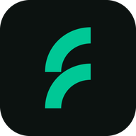
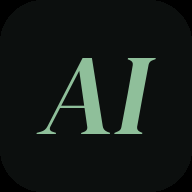
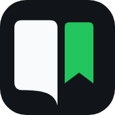
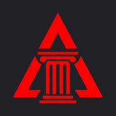

IA que funciona en tu empresa, no solo en la demo.
Una demo con IA se hace en una tarde. Lo difícil es conectarla a tus datos reales, ponerle una cifra que mejorar y que siga funcionando el día que algo falla. Eso es lo que hago, dentro de tu equipo y por jornadas.
¿Aún no sabes qué falla? Empieza por una auditoría de tu software, a precio cerrado. Te contesto yo, en menos de 48 horas.
Servicios
Tres formas de empezar
Si aún no sabes qué falla, empieza por la auditoría. Si ya sabes qué quieres construir, pasa directamente al trabajo en equipo. Y si lo que necesitas es que tu equipo sepa hacerlo, empieza por la formación.
Auditoría técnica
Reviso tu software con mediciones y evidencia, y te digo qué arreglar primero. Tres paquetes, según lo que tengas:
- Tu web o tu app3-5 díasRendimiento, móvil y accesibilidad, SEO, seguridad básica y experiencia de uso.
- Fiabilidad de tu servicio1 semanaMonitorización y alertas, despliegues y vuelta atrás, copias de seguridad, puntos únicos de fallo y coste de la nube.
- Tu sistema con IA1 semanaCómo se mide la calidad de las respuestas, qué pasa cuando inventa o falla el proveedor, coste por tarea, datos y privacidad.
- Informe con nota por área y cada fallo con su evidencia
- Lista de arreglos ordenada, para tu equipo o para mí
- Una hora para repasarlo con tu equipo
Precio cerrado, antes de empezar. Ver un ejemplo
Ingeniero en tu equipo
Forward deployed engineer
Entro en tus repositorios y tus sistemas, construyo contigo y no me voy hasta que funciona en producción.
- De prototipo a producción, con pruebas, monitorización y alertas
- Agentes y automatizaciones sobre tus datos y tus herramientas
- Tu equipo aprende a mantenerlo: también soy profesor
Por jornadas: contratas los días que necesitas, sin mínimo.
Formación para tu equipo
Cursos y talleres en tu empresa o en remoto, con temario adaptado y práctica sobre vuestros propios casos. He dado formación en Hack a Boss y en FEVAL desde 2023.
- Qué se puede pegar en ChatGPT y qué no
- Cómo trabajar con IA en las tareas de cada día
- Lo que pide la ley europea de IA: formar a quien la usa
- Llevar IA a producción: evaluación, monitorización y costes
- SRE y observabilidad
- Agentes sobre tus datos y tus herramientas
Temario y precio cerrados por escrito. Suele poder bonificarse con el crédito de Fundae.
Para quién
¿Te suena alguno de estos casos?
Empresas de software
- Tienes un prototipo de IA que luce en la demo y nadie se atreve a poner en producción
- Tu equipo está volcado en el producto y el proyecto de IA nunca empieza
- Algo falla de vez en cuando y os enteráis por los clientes
Pymes sin equipo técnico
- Alguien copia datos de un sitio a otro todos los días, a mano
- Probasteis una herramienta de IA y se quedó en una prueba
- Te han hecho un presupuesto, una web o una aplicación y no sabes si son buenos
Empresas que ya usan ChatGPT
- Cada uno lo usa a su manera, y nadie sabe qué datos de clientes acaban ahí
- Repetís la misma tarea en el chat todos los días: resumir, redactar, clasificar
- La ley europea de IA os pide formar al equipo en su uso y no sabéis por dónde empezar
Un taller para el equipo y un día de diagnóstico para elegir qué automatizar, a precio cerrado.
Cómo trabajo
Sabes qué vas a recibir antes de pagar
Hablamos
30 minutos, sin coste. Si no soy la persona adecuada, te lo digo.
Alcance por escrito
Objetivo que se pueda medir y precio por escrito: cerrado en la auditoría, por jornada en el trabajo en equipo.
Construimos
En tus repositorios y a la vista. Cada semana ves algo funcionando.
Te lo quedas
Código, documentación y alertas son tuyos, y tu equipo sabe llevarlos.
Pruebas
Lo que he hecho, con números
Casos reales, sin nombres de clientes por confidencialidad, y productos que puedes abrir ahora mismo.
Farmacéutica global · SRE
de disponibilidad en una plataforma de automatización con unas 3.000 tareas al día.
Farmacéutica global · IA para operaciones
de tiempo para asignar incidentes: un clasificador propio sobre ServiceNow manda cada incidente al equipo que debe resolverlo.
Raiatech · auditoría web
sobre 20 en mi propia web, auditada con el mismo método y repetida tras los arreglos.
Y mis propios productos en producción

Food & Farm Analytics ↗
El agricultor dicta lo que ha hecho y la IA lo convierte en una operación validada contra el registro oficial.

AI Reports ↗
Un pipeline de agentes que investiga, redacta y verifica sus fuentes. Los textos están generados con IA.

Bookreader ↗
Lector de EPUB y PDF con un agente que te explica lo que lees.

Areté ↗
Fuerza y resistencia en un plan: siete dominios medidos con tests reales.
Food & Farm Analytics ganó el Premio Emilio Botín 2020 del ceiA3 y Santander Universidades. Más sobre mí en luisgonzalezbernal.com.
Quién hay detrás
Raiatech soy yo
No soy una agencia. Quien habla contigo es quien escribe el código y quien lo deja funcionando. No hay comerciales ni nadie al que pasarle tu proyecto.
Empecé como ingeniero agrónomo, llevando una explotación con equipos de hasta 50 personas. De ahí pasé a programar: hice el ERP que sustituyó a los Excel del departamento de producción y un BI para controlar costes.
Después llegó el SRE: de 2022 a 2025 trabajé en el sector farmacéutico, donde un fallo no se arregla con una disculpa. Hoy construyo grafos de conocimiento y agentes de IA para operaciones, en producción. Y desde 2023 doy clases, así que sé explicar lo que hago a quien tiene que mantenerlo después.
Por eso me fijo primero en tu problema y luego en la IA. A veces la respuesta correcta es un script de veinte líneas, y te lo voy a decir. Más sobre mí
Dudas
Lo que me suelen preguntar
¿Cuánto cuesta?
Depende del alcance, así que no te doy una cifra a ciegas. La auditoría tiene precio cerrado y el trabajo en equipo se paga por jornada. Tras la primera llamada te mando el precio por escrito en 24 horas, y decides con él delante.
Ya tenemos equipo técnico. ¿Tiene sentido?
Sí, y suele ir mejor. Trabajo con ellos en vuestros repositorios, y cuando me voy el sistema se queda con quien ya lo conoce.
No tenemos equipo técnico. ¿Quién lo mantiene después?
Lo hablamos antes de empezar. Si no hay nadie que pueda mantenerlo, lo diseño lo más sencillo posible, con documentación y alertas claras, y acordamos quién atiende esas alertas.
¿Qué pasa con nuestros datos?
Trabajo en tu infraestructura y con los accesos que me des. Decidimos juntos qué modelo se usa y dónde se ejecuta, y firmo un acuerdo de confidencialidad si hace falta.
¿Qué pasa con nuestros accesos cuando terminamos?
Trabajo con el mínimo acceso que necesito y con cuentas a mi nombre que puedes revocar, nunca con credenciales compartidas. Las claves viven en vuestro gestor de secretos, no en mi portátil ni en el código. Al terminar repasamos juntos los accesos, los retiráis y rotamos cualquier clave que haya visto, con una lista de comprobación por escrito. Firmo un acuerdo de confidencialidad y, si trato datos personales, el contrato de encargado de tratamiento.
¿Y si en realidad no necesitamos IA?
Te lo digo en la primera llamada. Mejor perder un cliente que venderte algo que no te hace falta.
Contacto
Cuéntame en dos líneas qué necesitas
Trabajo en remoto. Te contesto en menos de 48 horas, y firmo un acuerdo de confidencialidad si hace falta.